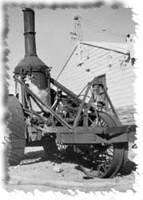
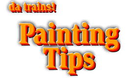

 The major magazines are constantly running articles on how to paint models in prototypical colors
and the problem is that it is somewhere I can't find when I need it. Over the years, many modelers
have found easy ways to paint these schemes, and I decided to start collecting useful tips and put
them in one place. This page is in its infancy, but as time goes on I hope it will fill up with good
information.
The major magazines are constantly running articles on how to paint models in prototypical colors
and the problem is that it is somewhere I can't find when I need it. Over the years, many modelers
have found easy ways to paint these schemes, and I decided to start collecting useful tips and put
them in one place. This page is in its infancy, but as time goes on I hope it will fill up with good
information.
The SP color reference chart is a collection of paint schemes specific to one railroad. I plan to do other major railroads that run here in the west as the information is gathered.
Some paint related links:
Bill Havrilla's color matches for railroad paint schemes [A-CHA] [CHE-I] [J-Q] [R-Z] is at John Shaw's web site.
- "Aging and Weathering Cars", John Allen, Dec 1955 Model Railroader
- "Aging and Weathering Cars and Locomotives", John Allen, Jan 1956 Model Railroader
- "Plagarized Weathering", Jim Vail, Jan/Feb 1989 Narrow Gauge and Short Line Gazette (with a list of other articles on weathering)
- "Coloring Plaster, Etc.", Roger Malinowski, Sep/Oct 1990 Narrow Gauge and Short Line Gazette
- "Building an HO Model Railroad With Personality" by John Olson
Kalmbach Books, 1983-1987, ISBN # 0-89024-0428-6
- "HO Narrow Gauge Railroad You Can Build" by Malcolm Furlow
Kalmbach Books, 1984-1989, ISBN # 0-89024-058-2
If you have comments, suggestions on what you would like to see
or data you might like, you can email me at:
Rick Blanchard - rick@urbaneagle.com